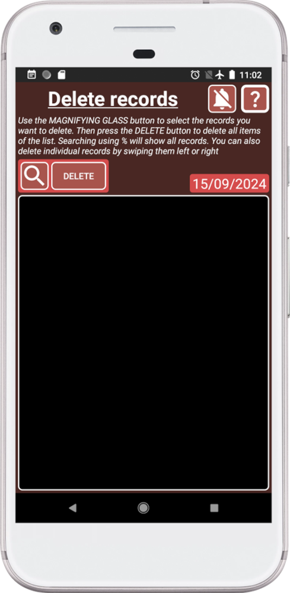
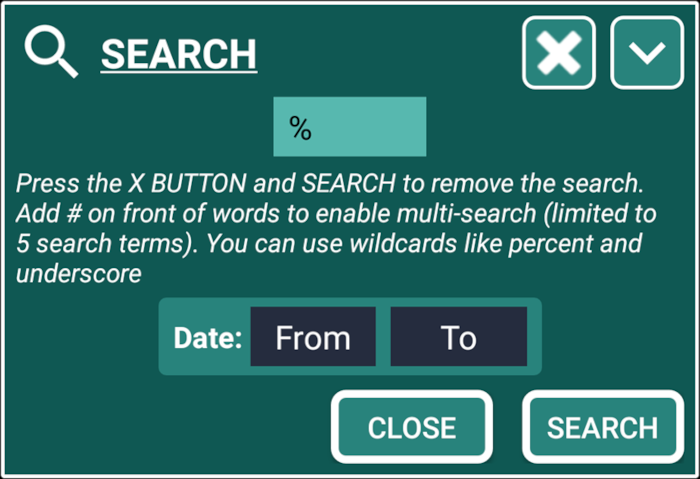
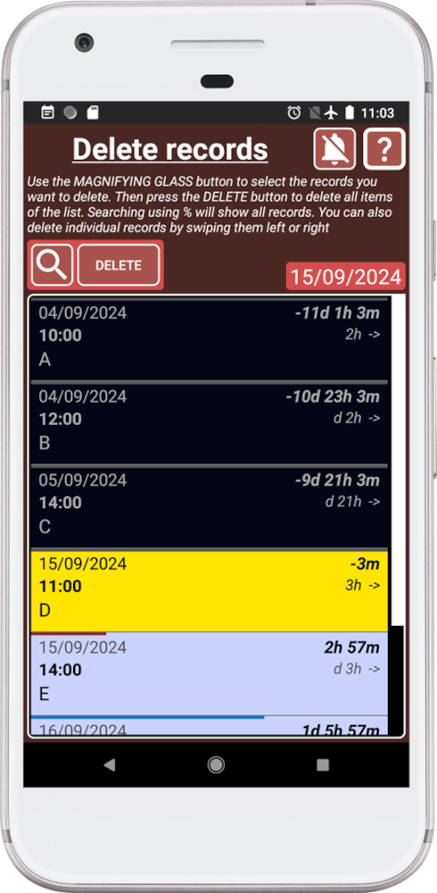
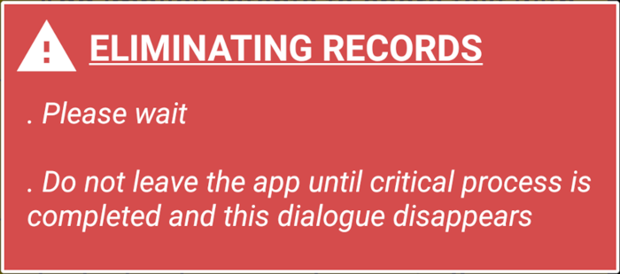

¿Cómo funciona?
El sistema de eliminación funciona en dos pasos:
1. Usa el sistema de búsqueda para agregar lo que deseas eliminar a la lista.
2. Elimina todos los registros presionando el botón ELIMINAR o deslízalos para eliminar registros individuales.
Para evitar eliminaciones accidentales, la lista está vacía cuando abrimos la ventana.
Una vez que un registro se elimina, no se puede recuperar.
Se recomienda hacer una copia de seguridad antes de eliminar registros.
¿Cómo eliminar registros?
1. Presiona en la ventana principal (azul) para abrir la ventana de Configuración.

2. Presiona el botón ELIMINAR REGISTROS.
Ahora verás la ventana dedicada a eliminar registros:

Esta ventana te permitirá usar el sistema de búsqueda para eliminar todos los registros dentro de la lista o deslizar los registros hacia la izquierda o derecha para eliminarlos.
Para evitar eliminaciones accidentales, la lista está vacía cuando abrimos la ventana.
3. Presiona la lupa para abrir el sistema de búsqueda y buscar %:

En este caso estamos buscando %, lo que significa que queremos agregar todos los registros:

El sistema de búsqueda es poderoso y fácil de usar, por lo que puedes encontrar cualquier cosa rápidamente y eliminarla.
Comienza con una búsqueda amplia para obtener una visión general de la información disponible. Recuerda, “¡Menos es más!”, usa menos palabras clave para obtener más resultados. Una vez que tengas una mejor comprensión de lo que estás buscando, usa palabras clave más específicas para reducir tu búsqueda y encontrar exactamente lo que necesitas.
Una vez que haya registros en la lista, puedes eliminarlos deslizando hacia la izquierda o derecha. O puedes presionar el botón ELIMINAR para eliminar todo lo que está dentro de la lista.
4. Presiona el botón ELIMINAR para eliminar todo lo que está dentro de la lista:

Recuerda, una vez que un registro se elimina, no se puede recuperar.
5. Presiona el botón ELIMINAR para eliminar todos los registros dentro de la lista. SECURElogBook mostrará este mensaje mientras elimina la información.
